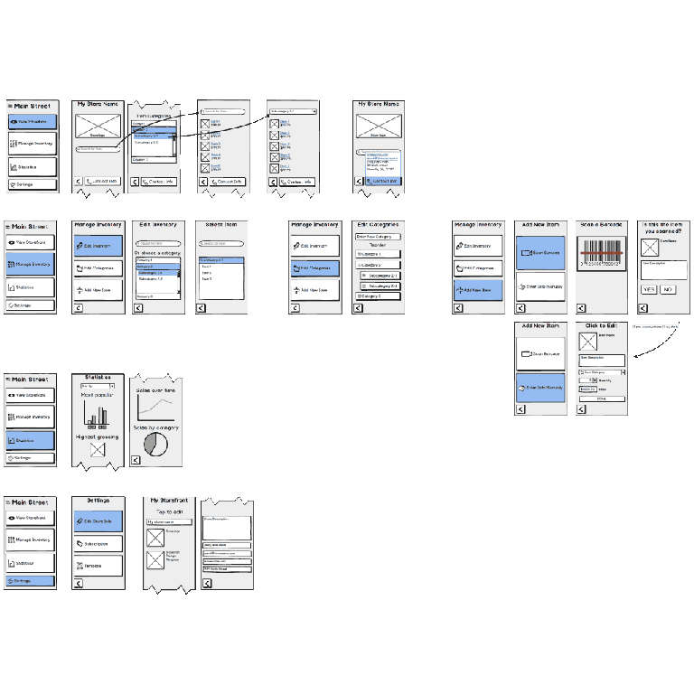
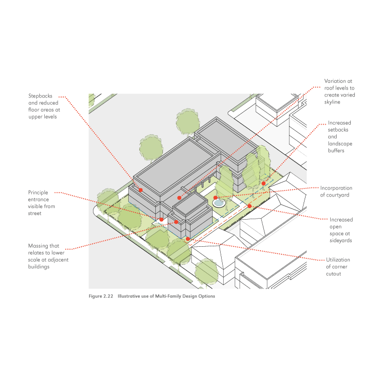
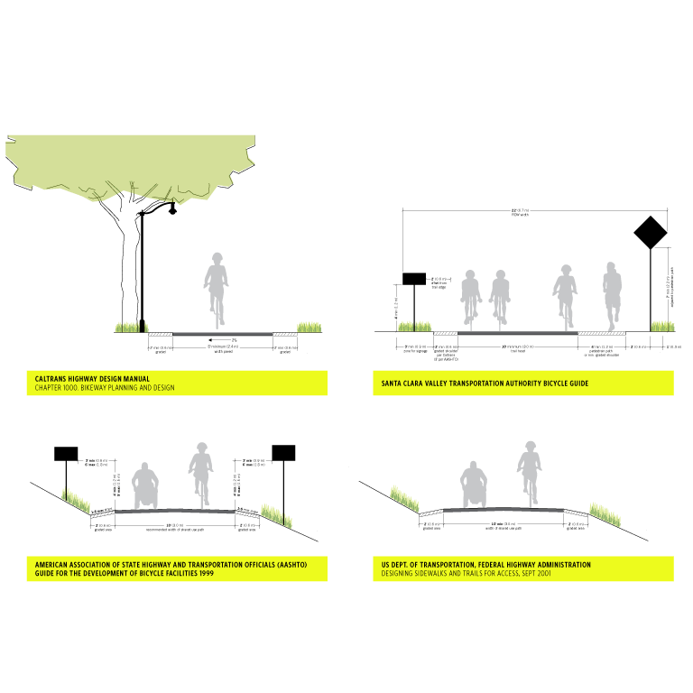
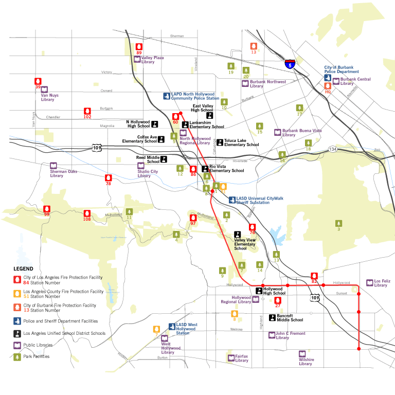
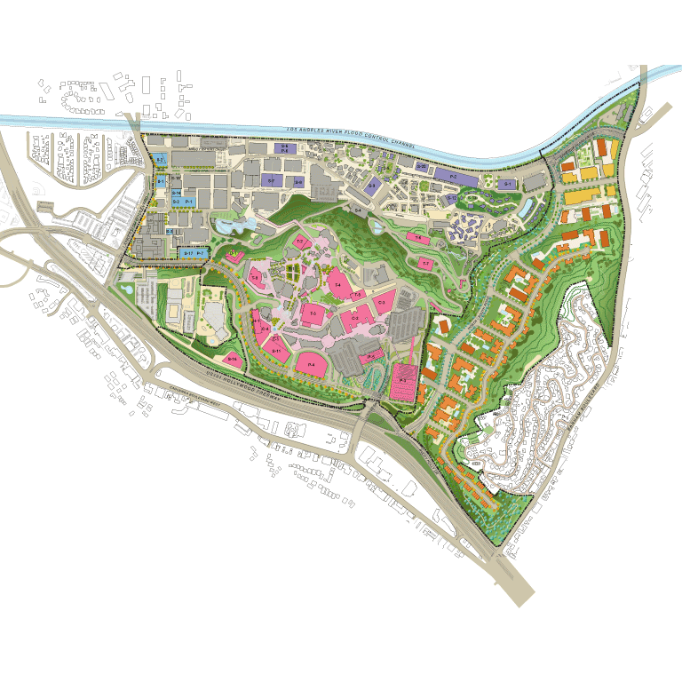
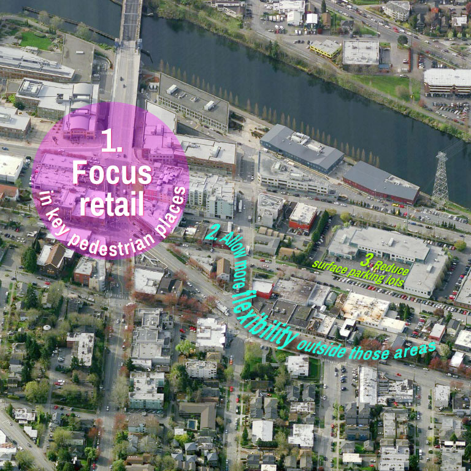
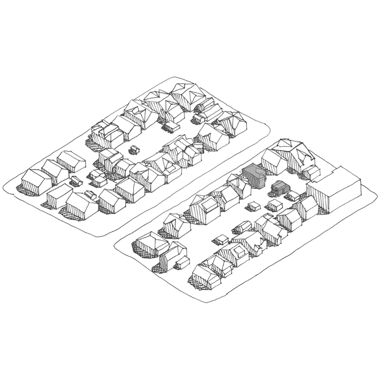

Web/App Design
Global Brand Works Website
 <<<<<<< HEAD
<<<<<<< HEAD
I designed and developed the Global Brand Works website with legibility, navigation, and mobile readiness in mind. I also help this boutique branding agency and their clients with general design, graphic, and presentation needs.
I designed and developed the Global Brand Works website with legibility, navigation, and mobile readiness in mind. The final finished product will launch in February 2015. I also help the agency with general design, graphic, and presentation needs.
Rumblemunk DJ Website

Rumblemunk.com is a responsive website that I designed and developed for a San Francisco-based DJ. The site includes a custom music player featuring the DJ’s productions, and music sets.
Wireframing, User Flows, Prototyping
My background includes a lot of quick architectural sketching and diagramming to effectively convey complex ideas. This experience has bestowed rapid wireframing, user flow diagramming, and prototyping skill. I am also bolstering my prototyping abilities by learning Javascript.

Graphic Design
Illustration


As part of a competition to master plan a portion of a new theme park and entertainment destination in Shanghai, I digitally painted section and elevations line drawings to convey exiting, active retail, restaurant, and entertainment areas. Drawing from a variety of textures and patterns found in design and fashion magazines, I experimented with transparency, overlap, and varying hues to reach an appropriate balance.
Conceptual Product Design


Tasked with coming up with product ideas that could build upon notNeutral's successful CityPlates, I started analyzing aerial photographs of different cities for inspiration. I was especially drawn to the way airports look from above. The top graphic was presented as an idea for a wall graphic or clock, with the runways as moving hands that align properly at 1:45.
The second graphic is intended to be a large-scale wall graphic of two runways that also functions as a digital clock, with the numbers at the ends of the runways denoting hours and minutes. Buyers could choose to orient the runways on their wall in any fashion they desired. These ideas led notNeutral to explore a product brand based on the concept of travel.
Photo Simulations

For the Universal Studios Master Plan, I led the production of a dozen or more photo simulations for the project’s environmental review, to demonstrate that the project would not adversely impact views. These simulations, including the above example, were produced using SketchUp with a rendering plug-in and Photoshop.
Photoshoppery

In addition to creating scenes of places that may one day exist, I am also a Photoshop enthusiast and graphic artist, much to the delight and entertainment of friends and loved ones. Mona Streisand was a big hit and is a source of pride.

Urban Design
3D modeling

I coordinated the production and ongoing revision of this 3D model among a team of designers, which was used in photo simulations and in site design to find the right dispersion and maximum heights of proposed residential buildings on the site. I also modeled several buildings myself, along with conceptual landscape design.
Santa Monica Zoning Ordinance & Design Guidelines
I recently directed the production of new Zoning Ordinance and Design Guidelines to be used in the decision-making process for new multifamily, commercial, and mixed-use development in Santa Monica. These efforts will help make Santa Monica more pedestrian, bicycle, and transit-friendly, improve the quality of new development, and make the zoning ordinance itself more legible and accessible. Image credit: John Kaliski Architects.

Communication
Seattle Multifamily Housing Presentation

I conducted an analysis of Seattle's multifamily-zoned areas and created a series of presentation boards for use in a public meetings to discuss how they might change over time. These materials ultimately led to the comprehensive revision of Seattle's multifamily zoning districts.
LA River Bike Path Presentation
I led the production of a presentation on bike paths in industrial areas and areas with limited rights-of-way to aid in the dialogue between a major entertainment studio and local governments in LA. I personally delivered the presentation to the Board and Council persons who oversee this area, and it resulted in a positive direction for all involved parties.
Mapping & Data Analysis
I created this map for a presentation to elected officials and planners to describe the abundance of public facilities within five miles of the Univeral Studios project site. I designed the icons based on universally-recognized symbols for those activities.

Project Management
Universal Studios Master Plan
While working at Rios Clementi Hale Studios, I managed a multidisciplinary team of designers to help Universal Studios create an 'entitlement package' that adopted their new master plan. Their needs constantly shifted, and included maintaining a building inventory, creating view simulations, 3D modeling, mapping, diagramming, and preparing various presentation materials.
Seattle Neighborhood Business District Strategy
While at the City of Seattle, I managed a project to revise its commercial and mixed-use zoning and design guidelines. Objectives included contending with overly ambitious ground-floor retail requirements, which were resulting in an abundance of vacant storefronts, largely due to the exploding residential market of the early 2000s. I made revisions to allow more flexibility for ground-floor uses, while also creating new development standards and revising design guidelines to help ensure buildings would be designed in ways that encourage pedestrian activity and placemaking. I also made recommendations that limited surface parking lots and aggressively lowered parking requirements in places near transit. The recommendations were unanimously adopted by City Council.
Seattle Backyard Cottages
I managed a project to examine allowing cottages and detached second units in single-family zones, which comprises most of the land of the city. I administered a demonstration program that allowed a few examples of cottages and second units to be built under tight constraints related to neighbor acceptance and a design selection committee. After the units were constructed, I conducted an analysis, surveys and outreach efforts to guage the level of acceptance for the idea of “backyard cottages” in Seattle's single family neighborhoods. These small housing units now provide an important housing option in the city's most expansive zoning district.